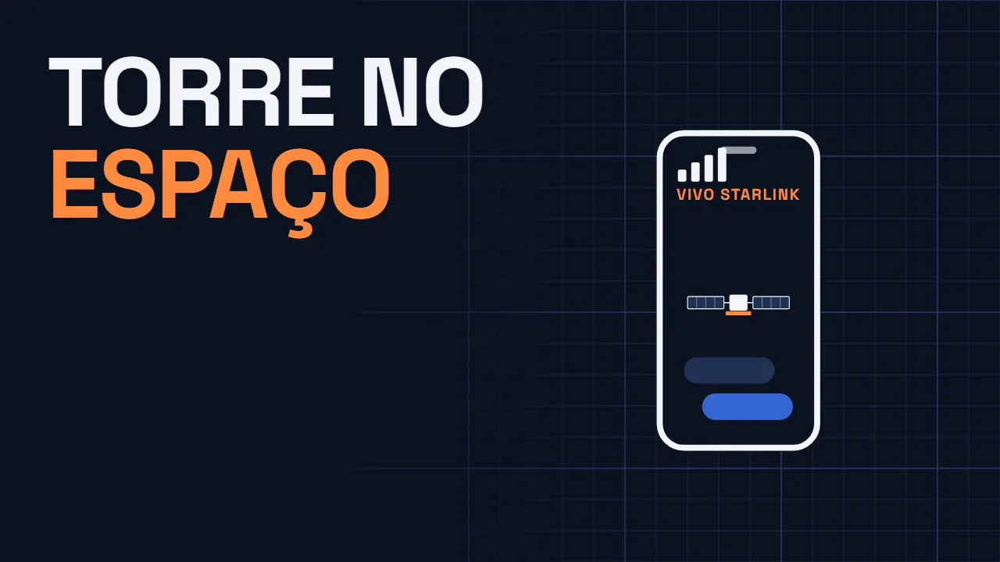
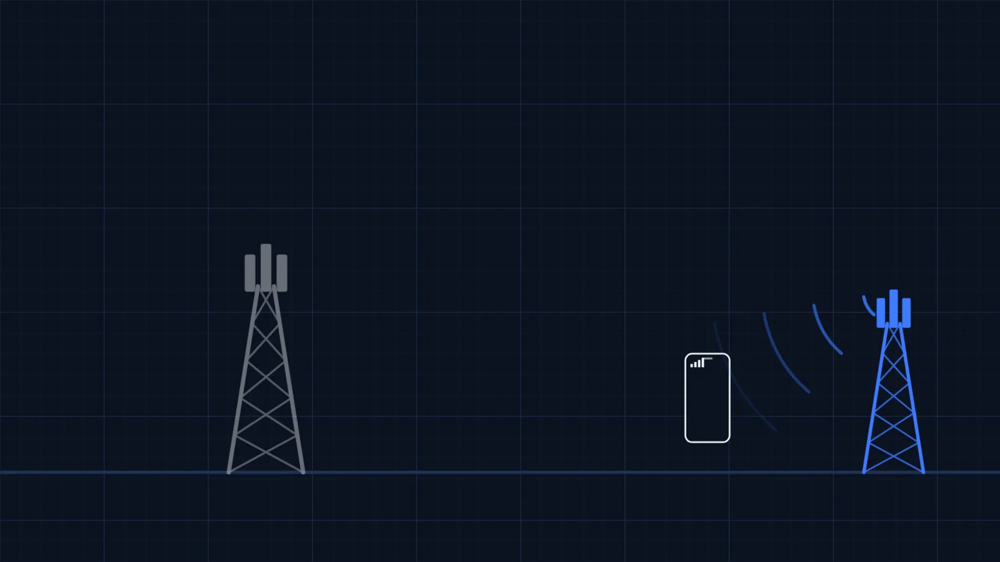
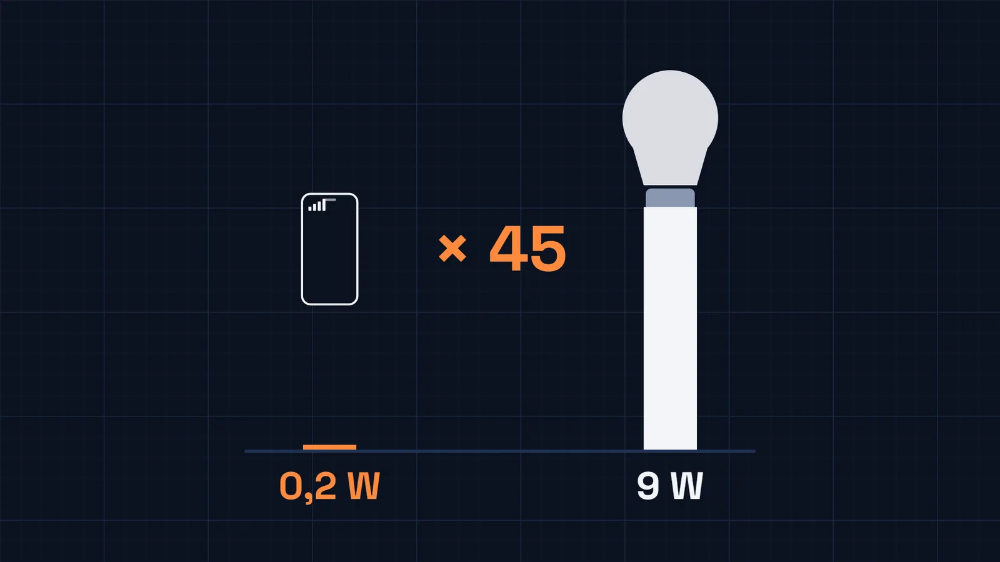
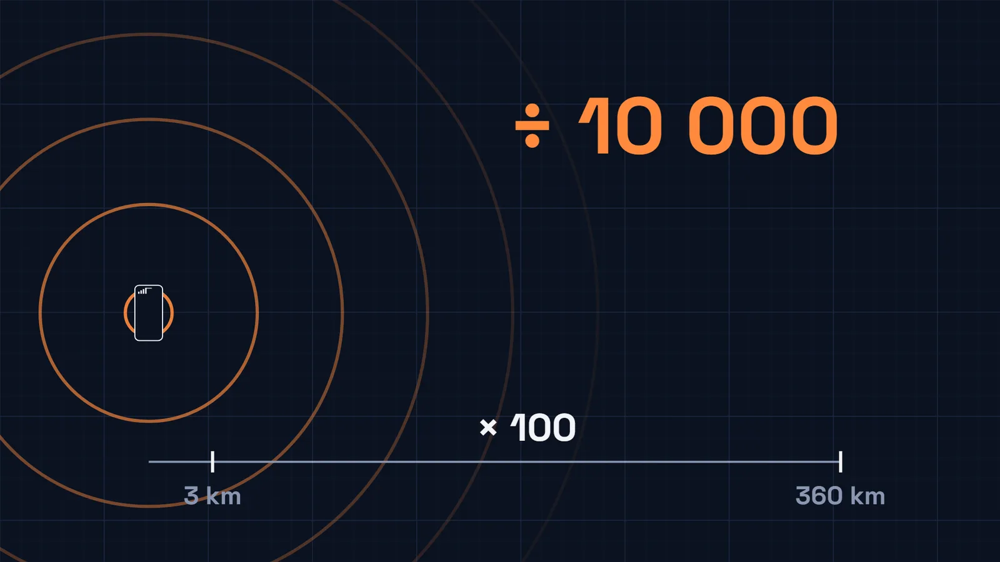
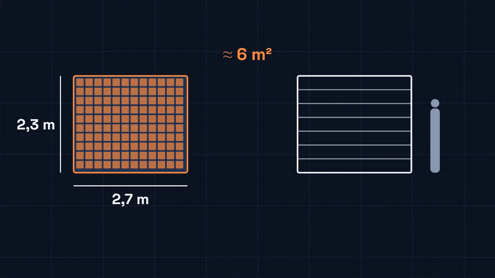
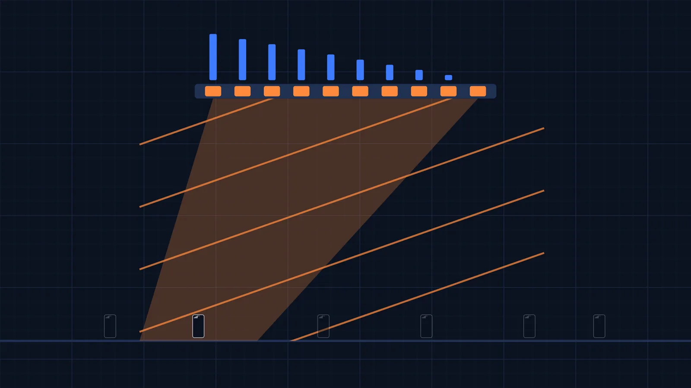
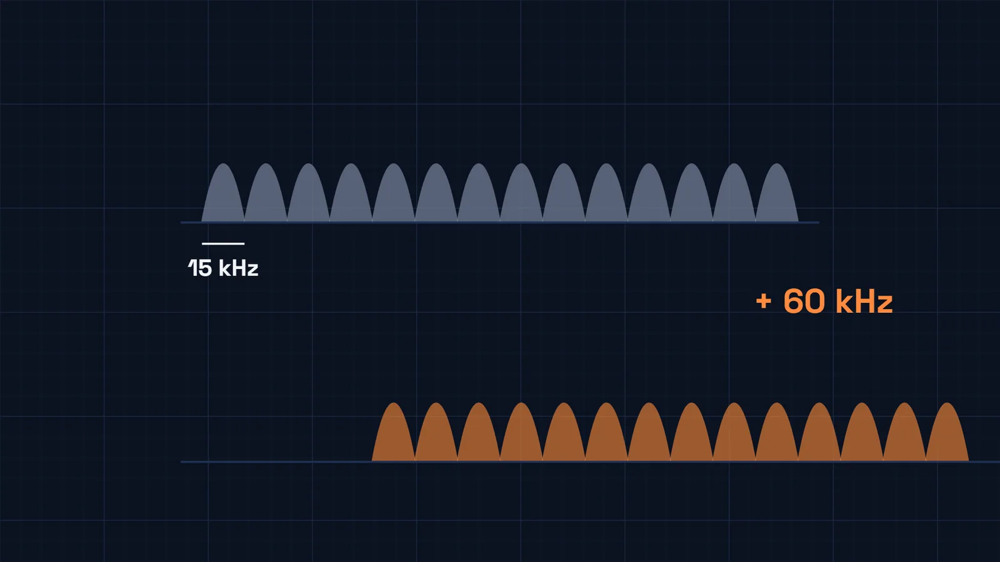
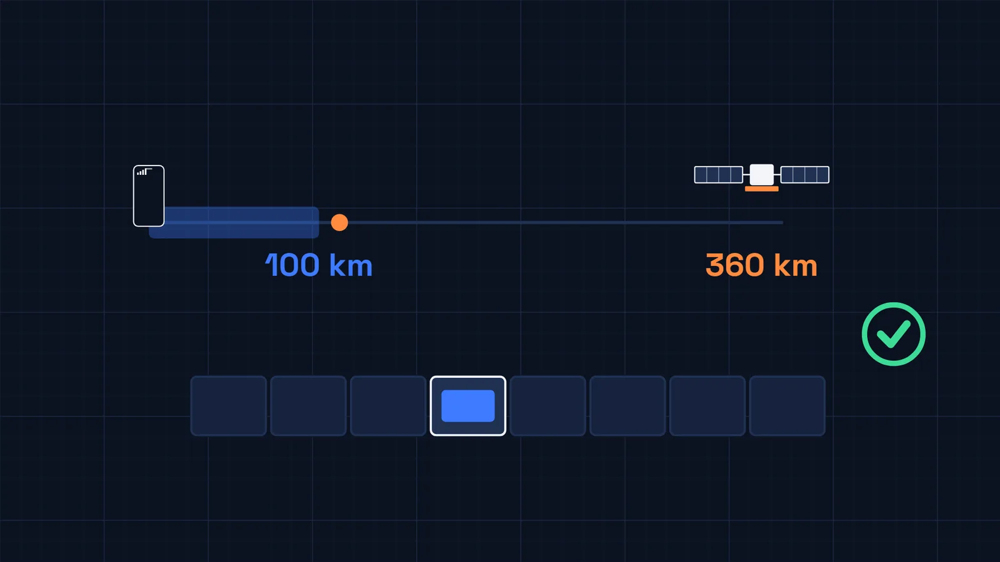
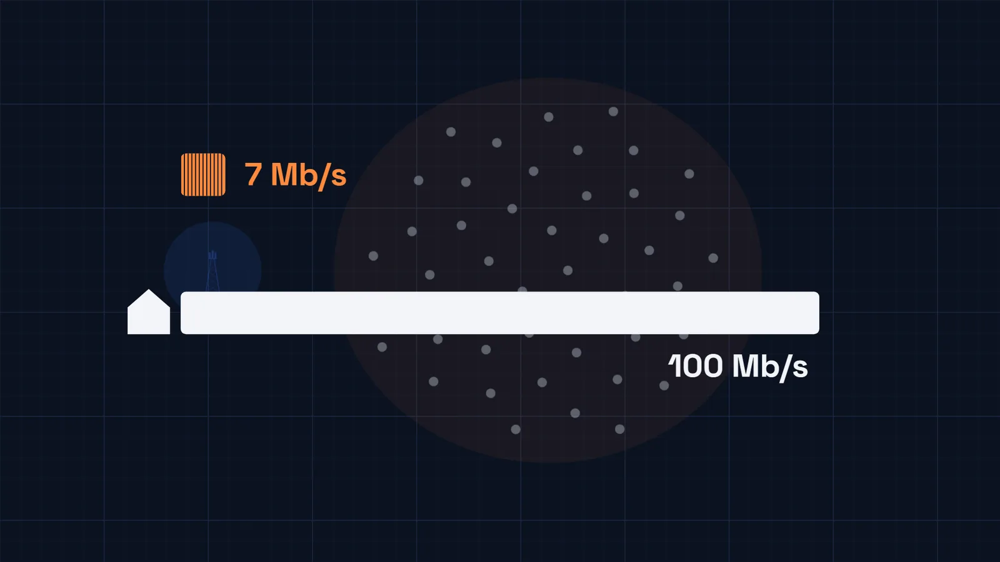
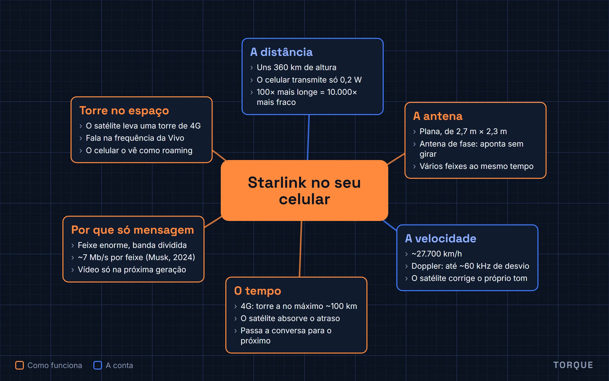

Como a Starlink fala direto com o seu celular?
O artigo do vídeo de 7 de novembro de 2026, com as figuras e um mapa mental no fim. Leitura de 7 minutos.

O player do YouTube só carrega quando você clica. Abrir no YouTube
Em uma frase: o satélite da Starlink leva dentro dele o equipamento de uma torre de 4G e fala na frequência da operadora, então o celular o enxerga como uma operadora parceira, em roaming; é o satélite que resolve a distância (com uma antena de fase enorme), a velocidade (corrigindo o efeito Doppler) e o atraso do sinal, e por isso o celular não precisa de nada novo.
No fim de outubro de 2026, a Vivo ligou uma rede nova para uns cinquenta milhões de clientes. Na estrada, no meio do mato, longe de qualquer torre, o celular perde o sinal da operadora e, de repente, mostra outro nome na tela. Dá para mandar mensagem no WhatsApp e abrir o mapa. Quem está do outro lado não é uma torre: é um satélite da Starlink, passando lá em cima.
O mais curioso é que o celular é o mesmo de sempre, sem antena extra nem aplicativo novo. Um aparelho feito para conversar com uma torre a poucos quilômetros agora fala com uma coisa a centenas de quilômetros de altura, andando mais rápido que uma bala.
O que o celular espera de uma torre
A torre comum fica parada, a alguns quilômetros de você, e fala numa frequência que é da operadora, como uma estação de rádio. O celular procura essa estação, se apresenta e passa a trocar dados com ela. Quando você viaja para outro país, o celular procura outra estação, de uma operadora parceira: isso é o roaming.
É exatamente assim que o satélite entra. Ele leva dentro dele o mesmo equipamento de uma torre de 4G; a própria Starlink diz que ele age como uma torre de celular no espaço. Ele fala na frequência da Vivo, e o celular enxerga o satélite como uma operadora parceira. É por isso que a Vivo pede para deixar o roaming de dados ligado.

Até aqui, parece simples. Mas uma torre no espaço está muito mais longe, anda muito rápido, e isso muda tudo.
Primeiro problema: a distância
Os satélites que falam com celular ficam a uns 360 km de altura, a distância de São Paulo ao Rio, só que para cima. E o celular grita baixinho: no 4G, ele transmite com no máximo 0,2 watt. Uma lâmpada de LED de casa gasta uns 9 watts, 45 vezes mais.

O problema é que o sinal enfraquece muito rápido com a distância: ele cai com o quadrado dela. Se a torre está a 3 km, o satélite está umas 100 vezes mais longe, e 100 vezes mais longe quer dizer um sinal 10.000 vezes mais fraco.

Memória de cálculo
- Potência máxima do celular no 4G
- 23 dBm = 0,2 W
- Distância da torre
- ~3 km
- Distância do satélite
- ~360 km, umas 100 vezes mais (120, na conta exata)
- Sinal no satélite
- 1 ÷ 100² da potência que chegaria à torre
~10.000 vezes mais fraco
Na conta exata, 120² dá 14.400 vezes. O vídeo arredonda para baixo.
Como o satélite escuta esse sussurro? Com uma antena enorme. Cada satélite leva uma antena plana de uns 2,7 por 2,3 metros, do tamanho de um portão de garagem. Quanto maior a antena, mais sinal ela junta, como uma concha atrás da orelha.

Mas uma antena grande só escuta bem a direção para onde está virada. E o satélite precisa escutar milhares de celulares, espalhados por um pedaço enorme do mapa.
A antena que aponta sem se mexer
A saída é uma antena de fase, em inglês phased array. Ela não é uma antena só: são muitas antenas pequenas, lado a lado. Quando todas recebem o mesmo sinal, cada uma pega a onda com um pequeno atraso em relação à vizinha. O satélite compensa esses atrasos na conta, e as ondas se somam numa direção só. É como várias pessoas empurrando um carro: se empurram juntas, o carro anda.

Mudando os atrasos, muda a direção, sem nada girar. A mesma antena forma vários feixes ao mesmo tempo, cada um apontado para uma região diferente. A antena da Starlink da sua casa, aquela placa branca, usa o mesmo truque para achar o satélite no céu.
Segundo problema: a velocidade
Para não cair, o satélite dá a volta na Terra a uns 27.700 km/h. Nessa velocidade, ele iria de São Paulo ao Rio em menos de um minuto.
Você já ouviu o que acontece quando uma coisa rápida passa por você: a sirene da ambulância fica mais aguda quando ela vem e mais grave quando ela vai. É o efeito Doppler. Com o satélite, acontece o mesmo com o sinal de rádio: quando ele vem, a frequência sobe; quando ele vai, ela desce.
E isso seria um desastre. O 4G divide o sinal em faixas finíssimas, de 15 kHz cada. Na frequência da Vivo, o desvio causado pelo satélite chega a uns 60 kHz: é como se cada pedaço da mensagem chegasse até quatro faixas para o lado.

O celular não corrige esse desvio: ele foi feito para torres paradas. Quem corrige é o satélite.
Ele sabe a própria velocidade e sabe onde está cada feixe. Então desafina o próprio sinal de propósito, na medida certa, para que ele chegue no chão afinado, e faz a conta inversa com o que o celular manda de volta. Para o seu celular, é como se a sirene passasse sem mudar de tom.
A velocidade e o desvio
- Raio da órbita
- 6.371 km + 360 km ≈ 6.731 km
- Velocidade
- √(GM ÷ r) ≈ 7,7 km/s ≈ 27.700 km/h
- São Paulo–Rio, ~360 km
- ≈ 47 s
- Doppler máximo em órbita baixa
- ~24 ppm × 2,6 GHz ≈ 62 kHz
- Faixa do 4G
- 15 kHz
~4 faixas de desvio
O desvio de ~24 ppm é o valor de referência do 3GPP para satélites em órbita baixa.
Terceiro problema: o tempo
No 4G, cada celular fala na sua vez, num horário marcado pela torre. Como o sinal leva tempo para viajar, a torre manda cada celular adiantar um pouco a fala, conforme a distância. Só que o 4G foi desenhado para torres a, no máximo, uns 100 km: o adiantamento máximo é de 0,67 milésimo de segundo. O satélite está a mais de 300 km, e o eco chega tarde demais para as regras do celular.

De novo, quem se ajusta é o satélite. E como cada satélite fica só alguns minutos no seu céu, ele passa a conversa para o próximo antes de sumir no horizonte. A mensagem sobe até ele, viaja por laser até outros satélites da Starlink e desce numa estação em terra, que a entrega na internet.
Por que só mensagem
Se tudo isso funciona, por que não dá para ver vídeo? Por causa do tamanho do feixe. Na cidade, uma torre atende um bairro. Um feixe do satélite cobre uma região muito maior, e todo mundo dentro dele divide a mesma banda.
Em 2024, Elon Musk disse que cada feixe aguentava uns 7 megabits por segundo, e que os feixes são muito grandes. Uma internet de casa costuma ter 100 megabits ou mais, só para uma família.

Por isso a Vivo começou com o que cabe nessa banda: mensagens e áudios no WhatsApp e no SMS, mapas e o aplicativo da operadora. Videochamada e site ficam de fora. A Vivo diz que a alta velocidade vem com a próxima geração de satélites, ainda sem data. Para isso, em 2025, a SpaceX comprou frequências próprias da EchoStar, por uns 17 bilhões de dólares.
Uma torre que finge estar perto
O satélite da Starlink fala com o seu celular fingindo ser uma torre comum. Uma antena do tamanho de um portão escuta o sussurro do celular. O satélite corrige a própria velocidade e o próprio atraso. E o celular nunca percebe que a torre está a 360 km de altura.
Bônus: o vídeo inteiro num mapa mental
As seis ideias do vídeo numa imagem só, para revisar ou mostrar para alguém.

Fontes
- Lançamento da Vivo Satélite em 26/10/2026: Teletime e O Tempo.
- Teletime, 16/09/2026: a Anatel autorizou o teste da Vivo nas faixas de 2.567,5 MHz e 2.687,5 MHz.
- Starlink, Direct to Cell: o satélite como "torre de celular no espaço", parceiro de roaming, com ligação a laser.
- Starlink, via skipcall.io ("Direct to cell explained", 19/10/2026): satélites de celular entre 330 e 370 km de altura.
- SpaceX, via Aerospace America: antena de fase de 2,7 × 2,3 m por satélite.
- 3GPP TS 36.101 (potência do celular, 23 dBm), TS 36.211 (subportadoras de 15 kHz), TS 36.213 (avanço de tempo de 0,67 ms) e TR 38.821 (Doppler em órbita baixa).
- Elon Musk no X, janeiro de 2024: "~7 Mb por feixe" (via Wireless Estimator).
- EchoStar, comunicado de 08/09/2025 sobre a venda das licenças AWS-4 e H-block à SpaceX.